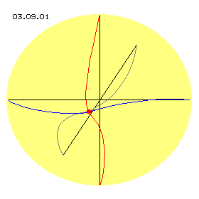
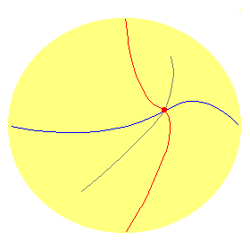
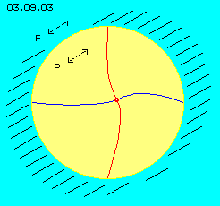
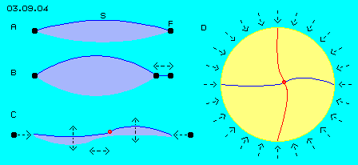
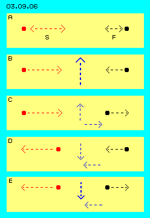

Variables Bewegungsmuster
In vorigen Kapiteln wurden die Bewegungen innerhalb einer Potentialwirbelwolke dargestellt. In Bild 03.09.01 ist diese ´Wolke´ gelb markiert, links im Bild sind drei Achsen (schwarz) eines Koordinatenkreuzes eingezeichnet. Es sind Verbindungslinien (blau, rot, grau) zwischen einem Ätherpunkt nahe beim Zentrum und den sechs ´Enden´ dieser Achsen eingezeichnet. Rechts in der einfachen Animation sind das Schwingen des Ätherpunktes und der Verbindungslinien dargestellt.
|
 |

|
Diese Bewegungen sind gekennzeichnet durch eine ´vertikal taumelnde Achse´ zwischen zwei Polen. Um den Äquator läuft scheinbar eine ´Welle´ um, die real aus phasenversetzten Kreisbewegungen um ´horizontale´ Achsen resultiert, allerdings mit unterschiedlichem Charakter. In diagonalen Richtungen (zwischen vertikaler Achse und horizontaler Ebene) sind die Muster der Schwingungen verlaufend von der einen zur andern Bewegungsform (hier nicht eingezeichnet).
Nach außen hin stellt sich eine Potentialwirbelwolke also keinesfalls als vollkommen symmetrische Einheit dar, sondern weist in alle Richtungen unterschiedliche Bewegungsmuster auf. Selbst in eine bestimmte Richtung ändert sich die aktuellen Bewegung fortwährend. Generell gilt allein, dass alle Bewegungen immer zugleich in alle drei Dimensionen statt finden.
Eingebettet ist diese Bewegungseinheit in das allgemeine Schwingen der Universellen Ätherbewegung. An der ´Außengrenze´ der Potentialwirbelwolke treffen beide aktuellen Bewegungen zusammen. Dabei können kurzfristig beide Bewegungen gleichsinnig oder gegensinnig verlaufen.
Durchgängiges Zittern

In Bild 03.09.03 ist eine Potentialwirbelwolke (P) schematisch dargestellt und ihre interne Bewegung durch zwei Verbindungslinien symbolisiert. Rund um diese Wolke ist Freier Äther (F). Anstelle seines komplexen Bewegungsmusters wird hier stark vereinfacht unterstellt, dass er sich in diesem Bild nur diagonal hin und her bewegen würde.
Ich habe früher den (nur bedingt stimmigen) Vergleich benutzt, dass Gebundener zu Freiem Äther sich verhält wie Eis zu Wasser. Übertragen auf die hier dargestellte Situation ist klar, dass diese ´Eis/Wolke´ selbstverständlich die generelle Bewegung allen ´Wassers/Äthers´ im Raum mit vollzieht. Eine Potentialwirbelwolke zittert also zunächst einmal im (fiktiv als ortsfest angenommenen) Raum genauso wie aller Äther rundum auch.
Nur innerhalb dieses universellen Mit-Schwingens finden die individuellen Schwingungen der Potentialwirbelwolke statt. Gegenüber diesem kleinräumigen universellen Schwingen sind die relativ großräumigen Schwingungen tatsächlich ´fremdartig´. In diesem Kapitel ist nun zu untersuchen, ob und wie der Übergang von kleinräumigem zu großräumigem Bewegungsmuster funktionieren kann. Außerdem ist zu prüfen, warum lokale Bewegungsmuster gegenüber universellem Bewegungsmuster überhaupt bestehen können.
Bewegungsdruck
In Bild 03.09.04 bei A ist schematisch eine Verbindungslinie (S, blau) als einfache Schwingung dargestellt mit dem Bereich ihrer Bewegung (hellblau). Der Freie Äther (F) an beiden Enden dieser ´Geigen-Saite´ schwingt vergleichsweise nur minimal, darum hier als (nahezu) ruhender Punkt (schwarz) markiert.

Wenn die Schwingung der Verbindungslinie momentan in eine Richtung erfolgt, welcher der momentanen Bewegung Freien Äthers entspricht, ist kurzfristig synchrones Schwingen möglich. Sobald aber die Bewegung der Verbindungslinie sich andersartig als der Freie Äther bewegt (oder gar gegensinnig), ergibt sich Widerstand. Der Gebundene Äther kann dort diese Bewegung nicht durchführen, nur weiter innen von der zuvor gegebenen ´Grenze´. Außerhalb dieser Grenze steht ´das gesamte Universum´, d.h. die Auswirkung davon kann nur in die Potentialwirbelwolke hinein erfolgen.
Im Vergleich zu obiger Geigen-Saite ergibt sich die bei B dargestellte Situation: der Fixpunkt zwischen Saite und Auflage wird zum Schwingungsbauch hin (hier nach links) verlagert - mit der bekannten Konsequenz eines ´höheren Tons´. Wenn allerdings die Schwingbewegung der Potentialwirbelwolke momentan wieder konform zur aktuellen universellen Bewegung verläuft, ist diese Einschränkung nicht mehr gegeben, d.h. in diesem Vergleich würde der Auflagepunkt der Saite vibrierend hin und her verlagert.
In diesem Bild bei C ist voriger Effekt übertragen auf die gekrümmte und sich windende Verbindungslinie (blau) aus früheren Bildern. Von beiden Seiten dieser Verbindungslinie ergibt sich periodisch eine Verkürzung des verfügbaren Schwingungsbereiches. Wenn dieser Verbindungslinie nurmehr geringere Distanz zur Verfügung steht, muss ihre spiralige Form angepasst werden. Die Amplituden der Schwingungen innerhalb der Potentialwirbelwolke werden damit größer, es ergibt sich ein Aufschaukeln der Bewegungen in den äußeren Ausgleichsbereichen aber auch des mittigen Schwingens (markiert durch die Doppelpfeile).
In diesem Bild bei D ist die gesamte Wolke schematisch dargestellt. Von allen Seiten her ist periodisch dieser ´Druck´ gegeben. Aus unterschiedlichen Richtungen und zu unterschiedlichen Zeiten widersetzt sich der Freie Äther den im Innern der Potentialwirbelwolke anstehenden Bewegungsrichtungen, d.h. nur weiter innen kann die ausgleichende Bewegung ausgeführt werden. Mittels umfassender ´Massage´ treibt der Freie Äther die internen Vorgänge fortwährend an.
Es bleibt in dieser Problematik (zumindest vorläufig) offen, warum und wie erstmals im Universum eine Potentialwirbelwolke zustande kam, ihr Fortbestehen ist aber erklärbar. Allerdings ist dieser Bestand keinesfalls gesichert bzw. kann dauerhaft nur unter bestimmten Bedingungen gegeben sein.
Einwirkung und Rückwirkung
Zuvor soll aber nochmals das gegenseitige Wirken zwischen einer Potentialwirbelwolke und Freiem Äther dargestellt werden. In Bild 03.09.06 bei A ist ein schwingender Ätherpunkt (S, rot) einer Verbindungslinie und ein Punkt Freien Äthers (F, schwarz) dargestellt. Es wird hier stark vereinfachend unterstellt, dass beide nur eine horizontale Hin- und Her-Bewegung ausführen, deren unterschiedliches Ausmaß durch unterschiedlich lange Pfeile markiert ist. Diese Bewegungen können momentan gleichsinnig oder gegensinnig verlaufen, vier prinzipielle Situationen sind darunter in den Zeilen B bis E dargestellt. Durch blaue Pfeile zwischen beiden Punkten sind Auswirkungen schematisch gekennzeichnet.

Bei B bewegt sich der rote Punkt bzw. seine Verbindungslinie momentan nach rechts und der Punkt Freien Äthers nach links. Das ist oben diskutierter Konfliktfall, bei welchem der Äther ´Stress´ erleidet. Der rote Punkt möchte nach rechts, wird daran aber gehindert, also muss die Verbindungslinie ausweichen, was hier durch den blauen, nach oben gerichteten Pfeil angezeigt ist. In dieser Situation wirkt Freier Äther als Motor, indem er die Ausschläge der Verbindungslinien verstärkt.
Bei C bewegt sich der rote Punkt nach rechts, nun auch gleichsinnig der Punkt Freien Äthers. Es gibt auch hier ´Stress´, weil sich die Verbindungslinie weiter nach links bewegen will als der Freie Äther zulässt. Auch hier muss also die Verbindungslinie weiter innen entsprechend ausweichen (hier durch blauen Pfeil nach oben angezeigt).
Die Potentialwirbelwolke übt damit momentan einen Schub nach rechts auf den dortigen Freien Äther aus, in Richtung seiner momentanen Bewegung. Eine zuvor erfolgte Verzögerung der Bewegung Freien Äthers (siehe folgende Situationen) würde damit kompensiert. Zum anderen aber könnte der Freie Äther tatsächlich etwas mehr den Bewegungscharakter der Verbindungslinie annehmen, indem dieser Rechtsdruck zusammen mit der Aufwärts-Komponente eine etwas gestrecktere Bewegung ergibt (diagonal zu beiden Pfeilen, hier nach rechts oben).
Bei D nun bewegt sich sowohl die Verbindungslinie wie auch der Freie Äther momentan nach links, nur eben unterschiedlich weit. Die Potentialwirbelwolke ´übt Zug aus´ auf den Freien Äther. Entweder wird damit die Kurve der Verbindungslinie noch flacher gezogen (blauer Pfeil abwärts) oder aber vorige Anpassung der Bewegung Freien Äthers (in Situation C) wird nun kompensiert bzw. nochmals verstärkt, indem dieser Punkt auf wiederum etwas gestreckter Bahn in Richtung beider blauen Pfeile schwingt.
Bei E sind die Bewegungen gegenläufig. Die Potentialwirbelwolke bewirkt noch immer vorigen Zug auf den Freien Äther, aber die erhöhte Streckung der Verbindungslinie ist nun unausweichlich (markiert durch den dicken Pfeil abwärts). Diese Situation ergibt nun also wiederum eine Intensivierung der Schwingbewegung, wirkt als ein zusätzliches Aufschaukeln der Bewegungen innerhalb der Potentialwirbelwolke.
Energie
Freier Äther wirkt als ´Motor´ nicht nur indem er als ´Prellbock´ (Situation B) eine stärkere Krümmung von Verbindungslinien erzwingt, er wirkt auch als ´Brems-Lok´ (Situation E) und beschleunigt damit das Rückschwingen (bzw. die Streckung) der Verbindungslinien. Auf den Freien Äther wird damit gleichermaßen Druck und Zug ausgeübt, so dass insgesamt seine Spiralknäuelbewegung nicht gedämpft wird. Andererseits nimmt das Bewegungsmuster Freien Äthers durch diese ´Wechselwirkungen´ in minimalen Schritten, von außen nach innen, den Charakter des Bewegungsmusters der Potentialwirbelwolke an.
Nach diesen Überlegungen würde also dieser ´Motor´ kräfteneutral arbeiten. Es finden in diesem Grenzbereich Richtungsänderungen von Bewegungen statt - und diese erfordern nach bekannten Erkenntnissen entsprechenden Krafteinsatz. Es sei in diesem Zusammenhang aber daran erinnert, dass die Speichen eines Rads die Bewegungsrichtung der Felgenmasse permanent ändert - ohne Krafteinsatz zu erfordern. Die Arbeit der Umlenkung wird dort vielmehr geleistet durch Spannung im Material der Speiche, durch dessen Zusammenhalten, allein durch ´passiven´ Widerstand, durch statisches Nicht-Bewegen innerhalb der Speiche.
Hier im Äther gibt es nur ständiges Bewegen und dabei ist entscheidendes Merkmal des Äthers dessen unabdingbares Zusammenhalten. ´Stress´ im Äther durch Druck- oder Zugkräfte führen damit unmittelbar zu Richtungsänderungen, wobei nicht einmal Reibungsverluste auftreten können. Es ändert sich am ´Energiegehalt´ zwischen Freiem und Gebundenem Äther überhaupt nichts, es treffen nur diverse Bewegungsrichtungen im Grenzbereich auf einander, die sich in gleichwertiger Wechselwirkung gegenseitig bestätigen.
Entrophie
Nach herrschender Lehre wird ein teilchenhaftes Universum unterstellt (sofern man es nicht nur durch inhaltslose Worthülsen wie ´bestehend aus Feldern´ definiert). In diesem treten unweigerlich Reibungsverluste auf und letztlich ist der ´Wärmetod´ des Universums unausweichlich (und oftmals beschrieben mit dem unglücklichen Begriff der Entrophie).
Wenn obige Annahme eines kräfteneutralen Antriebs bzw. des Fortbestehens der Bewegungen in Potentialwirbelwolken nicht akzeptiert wird, dann wäre die Konsequenz konträr zum Entropiesatz: nicht zunehmender ´Tot´ sondern zunehmendes Leben. Potentialwirbelwolken zeigen das speziellere bis hin zum individuellen Bewegungsmuster. Aus ihnen kann nicht neue uniforme Spiralknäuelstruktur entstehen (aber siehe unten). Es könnte also nur ein Übergang von Energievolumen Freien Äthers hin zu mehr oder größeren oder komplexeren Potentialwirbelwolken statt finden. Also würde das Universum insgesamt differenziertere Strukturen aufweisen zu lasten von geschwächter universeller Ätherbewegung.
Resonanz
Obiges Geben und Nehmen der Wechselwirkungen im Grenzbereich von Potentialwirbelwolken erinnert an Resonanzen, wo auch ´Energietransport´ oder Übertragung von Bewegungsmustern statt findet, ohne Verlust (sofern Reibung ausgeklammert wird, die im teilchenlosen Äther ohnehin nicht auftreten kann). Aber auch im Äther verlaufen alle Wechselwirkungen resonant und harmonisch, so dass keinesfalls alle Arten von Potentialwirbelwolken beständig existieren.
Ganz konkret erfolgt diese ´Auswahl´ von Potentialwirbelwolken an oben diskutierten Grenzbereichen. Nur wenn beispielsweise obige vier Phasen aus Bild 03.09.06 in regelmäßigem bzw. gleichwertigem Wechsel vonstatten gehen, kann das Aufschaukeln bzw. wechselseitige Harmonisieren von Schwingungen beständig sein. Andernfalls wird das lokale Bewegungsmuster so lang ´zurecht gedrückt´ bis es in resonantem Verhältnis zum Bewegungsmuster seiner Umgebung ´abgestimmt´ ist.
Resonanz ist eine bekannte Erscheinung z.B. der Akustik, wobei dort die ´Abstimmung´ über das Medium Luft erfolgt. Es sind auch resonantes Verhalten z.B. elektromagnetischer Erscheinungen bekannt, wobei dort allerdings als Medium nur abstrakte ´Felder´ fungieren. Die Resonanz im Äther selbst basiert auf realer stofflicher Bewegung und ist viel zwingender, weil ohne Streu- oder Reibungsverluste (wie z.B. bei Akustik). Auch alle elektromagnetischen Erscheinungen sind letztlich ganz reale Bewegungsmuster des Äthers, z.B. erkennbar durch rechtwinklig zueinander stehende (abstrakte) ´Felder´, d.h. nur erklärbar durch die hier beschriebene reale Notwendigkeit synchroner Ausgleichsbewegungen.
Die Resonanz im Äther ist so streng, dass nicht-adäquate Bewegungsmuster ausgelöscht werden. Deren gegensinnige Bewegungsphasen führen zum extremem Aufschaukeln. Wenn auf der anderen Seite der Wolke nicht ausgleichender Gegendruck existiert, nimmt die Grenzzone so unregelmäßige Kontur an, dass die Wolke letztlich ´zerplatzt´ bzw. höchst ungeordnete Bewegungen resultieren.
Bewegungsphasen daraus werden zufällig identisch sein mit momentaner Bewegung Freien Äthers, d.h. diese ´verlaufen´ sich wirkungslos. Momentan gegenläufige Bewegungen daraus führen notwendigerweise zu Ausgleichsbewegungen diverser Art. Davon passende Abschnitte gehen wiederum in die Bewegung Freien Äthers ein. Der jeweilige Rest wird so lang ´zurecht geknetet´ bis diese unharmonische Wolke sich vollkommen aufgelöst hat im Freien Äther.
Bei diesem Auflösungsprozess nimmt Freier Äther keine zusätzliche Energie auf (werden seine Bewegungen nicht beschleunigt). Die Bewegungen der ursprünglichen Wolke werden durch Widerstand des Freien Äthers nur umgeformt, bis letztlich alle Bewegungsphasen (nicht mehr resonant, sondern) identisch mit Freier Ätherbewegung sind. Was zuvor an Widerstands-Kraft verloren gegangen sein könnte, würde durch die Aufnahme passender Bewegungsreste in die Spiralknäuelbahn wieder kompensiert. Wenn dieser Auflösungsprozess keinen Energiezuwachs im Freien Äthers ergeben kann - kann entsprechend verlustfrei die obige Aufrechterhaltung resonanter Potentialwirbelwolken nur statt finden.
Die Spiralknäuelbahnen Freien Äthers resultieren aus vielen überlagerten Bewegungen, d.h. sie werden viele adäquate Bewegungsabschnitte aufweisen. Insofern sind sehr viele Bewegungselemente gegeben, zu welchen Bewegungsmuster von Potentialwirbelwolken resonant sein können. Obige vier Phasen aus Bild 03.09.06 müssen z.B. nicht genau in dieser Reihenfolge ablaufen bzw. erst nach ganzzahligen Wiederholungen muss sich dieses Gleichgewicht insgesamt einstellen. Entsprechend vielgestaltig können lokale Bewegungsmuster sein - im Rahmen des dargestellten essentiellen Bewegungsprinzips der Potentialwirbelwolke.
Mehr oder weniger Harmonie
Bislang wurde die Lokale Ätherbewegung nur theoretisch isoliert und insgesamt als ortsfest im Raum betrachtet. Im nächsten Kapitel werden diverse reale Potentialwirbelwolken angesprochen und es wird offenkundig, dass sich unzählige Wolken höchst unterschiedlicher Größenordnung überlagern wie auch im Raum wandern. Solche Wolken sind physikalische Erscheinungen (vom Elektron bis zur Galaxis), sie können selbstverständlich auch ´feinstofflicher´ Art sein.
Die ´materiellen´ Potentialwirbelwolken sind relativ grobe Bewegungsmuster, d.h. zwischen Freiem Äther und deren Bewegungsmuster sind relativ große Differenzen hinsichtlich ihrer Bewegungsformen. Feinstoffliche Potentialwirbelwolken erfordern wesentlich geringere ´Verformung´, d.h. stellen viel kleinere Überlagerungen der Spiralknäuelbahnen Freien Äthers dar. Sie können darum leichter aufgebaut werden als grobstoffliche Bewegung (es ist leichter ´in Gedanken´ einen Stein zu verrücken als den realen Prozess zu vollziehen). Die ´spirituellen Wolken´ können auch weitreichend sein (so wie jede Potentialwirbelwolke theoretisch wie praktisch keine wirkliche Grenze hat). Und natürlich können diese ´geistigen´ Erscheinungen auch ´materielle´ Potentialwirbelwolken beeinflussen (so wie überlagernde ´physikalischen´ Wolken sich selbstverständlich gegenseitig beeinflussen).
Dies bedeutet, dass eine Potentialwirbelwolke keinesfalls immer nur von reinem Freien Äther umgeben ist. Bei der Wanderung dieser Wolke durch den Raum kann sie auf höchst unterschiedlich ´verfärbten´ Freien Äther stoßen bzw. sich im Einflussbereich anderer großer Potentialwirbel befinden oder diese durchlaufen. Je nach deren Charakter wird die beobachtete Wolke also unterschiedlichen Einflüssen ausgesetzt sein. Diese wirken sich an oben beschriebenen Grenzbereichen aus, können aber auch die Bewegungscharakteristik des gesamten Potentialwirbels beeinflussen.
Die Wolke kann dabei ´positiv´ tangiert sein, z.B. indem das etwas veränderte Bewegungsmuster Freien Äthers eine bessere Resonanz zur ihrer Bewegungscharakteristik ergibt, sich beide in sehr harmonischem ´Einklang´ befinden. Umgekehrt kann natürlich die Wolke auch ´negativ´ tangiert sein durch ein etwas anderes Umfeld, bis hin zur obigen Auflösung wegen Disharmonie. Beides wird zwischen Potentialwirbelwolken der ´materiellen Welt´ wie innerhalb der Wolken ´geistiger Welt´ auftreten - aber ebenso werden diese Effekte auch zwischen Wolken grob- wie feinstofflicher Art auftreten.